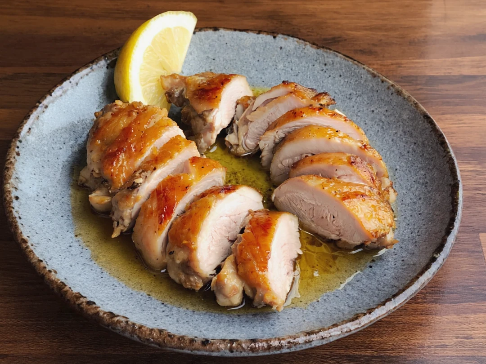
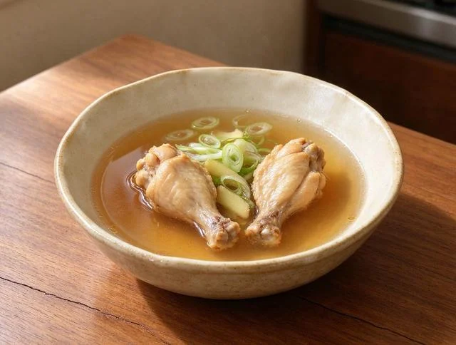
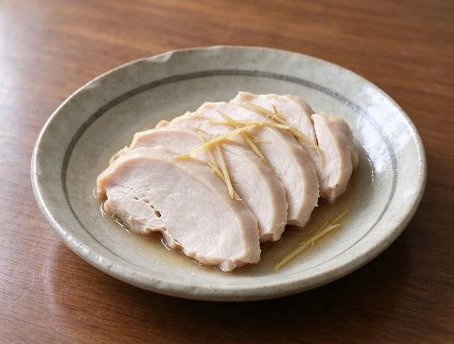
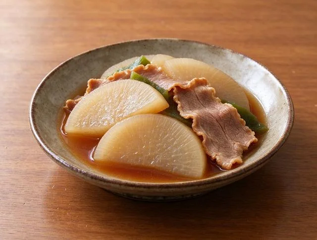
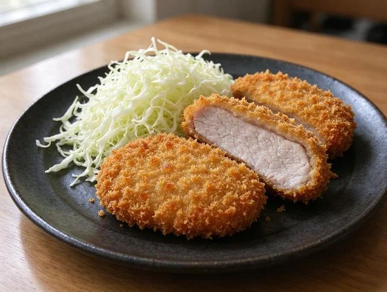
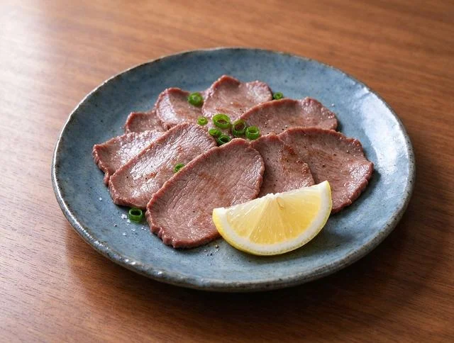
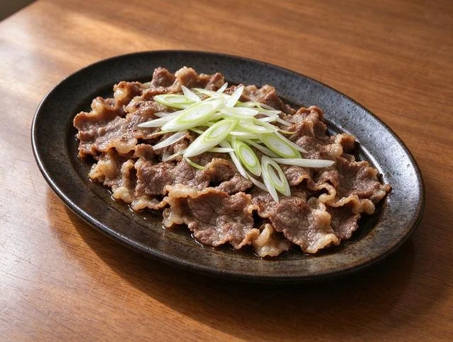
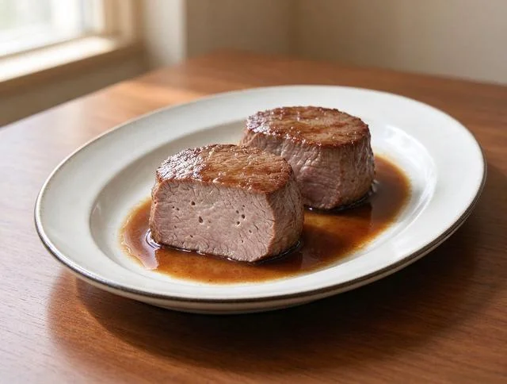

すべての目次
食べたい一皿、動物のくらし、体の場所。気になったところから。


豚こまと玉ねぎを別に焼き、最後にしょうがだれをからめる。
料理イメージすべての記事を、章から読む
動物のくらしと畜産の現場食べる、動く、休む。動物の一日と、実際の記録をたどる。18本
- 動物のくらしを、たどってみよう
牛、ぶた、にわとりが食べる、動く、休む。そのくらしから食卓へ。
- アニマルウェルフェアって、どんなこと？
動物の過ごし方を考えるときの手がかりを、食べ物や休む場所から知る。
- 日本／神奈川県の飼育試験・農林水産省の令和6年度調査鶏は巣箱で卵を産み、止まり木に上って休んだ
巣箱や止まり木を使った鶏。神奈川県の飼育試験で見えた行動を読む。
- 日本／2022年ほか／国会会議録・農林水産省資料卵を産まない雄のひなは、生まれてすぐに殺される
日本の国会などの資料から、卵を産まない雄のひながどう扱われてきたかを見る。
 ぶたは、どんな場所で休む？
ぶたは、どんな場所で休む？床のかたさや広さが違うと、ぶたの横になり方はどう変わる？
- 母ぶたが入る二つのさく
妊娠しているときと子を産むとき。母ぶたの二つのさくを見分ける。
 乳牛の親子は、どうすごす？
乳牛の親子は、どうすごす？生まれた子牛が最初に飲む乳と、そのあとの親子の過ごし方。
- にわとりの足のうらから、何が見える？
にわとりの足のうらを手がかりに、水や床のしめり方を考える。
- 牛のくらしを知る
草を食べて口に戻し、もう一度かむ。牛の食事と休み方を知る。
- ぶたのくらしを知る
においをかぎ、鼻で土を探る。ぶたが何をして過ごすかを知る。
- にわとりのくらしを知る
ついばむ、砂をあびる、高い所で休む。にわとりの一日の動き。
- 79件の記録／場所・時期・元の資料畜産の現場で報告された事例
記録ごとの場所・時期・資料を確かめる。写真を表示せずに読める。
- 日本・島根県／2023年／行政資料・判決報道従業員が2頭の牛の鼻や首を蹴った
島根県の乳牛の事例を、行政の説明と判決の報道に分けて読む。
- 英国・デヴォン／2024年の現場調査／英国政府・州の発表子牛が横たわっていたのは、糞尿とごみの中だった
英国デヴォンで見つかった子牛と飼育環境について、調査と判決を読む。
- 英国・ケンブリッジシャー／2024年／自治体の発表けがをした家畜に、体を休める敷き材が足りなかった
英国の自治体が公表した、けがをした動物の敷き材をめぐる事例。
- 日本・茨城県／2005〜2014年度／食肉衛生検査所の調査荷受け台で一晩を過ごした鶏
運ばれた鶏が荷受け台で過ごした時間。茨城県の検査所が残した調査。
- ポーランド／2024年発表／飼育研究・記録写真鶏の足裏の傷は、指の腹にまで及んでいた
どの場所に傷が見つかったのか。ポーランドの鶏の足うらの研究。
- デンマーク／2021年発表／商業鶏群の研究一羽の鶏の胸に、四つ以上の骨折が見つかった
デンマークの採卵鶏を調べた研究で、胸の骨に見つかった傷。
お肉の部位と栄養図鑑体の場所がわかると、肉のかたさや向いている料理が見えてくる。11本
- お肉の部位と栄養図鑑
牛・ぶた・にわとりの30部位から、場所、食べ方、料理を選ぶ。
- ぶたのロースは、どこ？
ぶたの背中のどこがロースか。切り口と、厚さに合う料理へつなぐ。
- ぶたのももは、どんな肉？
後ろ脚の赤身。脂身の違いと、薄切りやかたまりの使い方を見る。
- スペアリブは、どこの骨？
スペアリブの骨は体のどこにある？ 骨付き肉を買う量にもつながる話。
- 牛すねは、なぜ煮込みにする？
牛の脚のすねは、なぜ時間をかけて煮るとほぐれるのか。
- 牛ももの赤身を見てみよう
牛の後ろ脚の赤身と、繊維の向きや切り方を知る。
- 鶏むねと鶏もも、どこがちがう？
むねと脚の上のもも。にわとりの体の場所と、食感の違い。
- 牛肉の主要部位を知る
牛の首から脚まで。煮込む部分と、厚く切って焼ける部分を見分ける。
- 豚肉の主要部位を知る
ぶたのかた、背中、おなか、脚。とんかつと角煮の部位を調べる。
- 鶏肉の主要部位を知る
手羽の根元と先、むね、もも。にわとりの部位を絵から選ぶ。
- お肉の栄養を比べる
100g当たりの成分を、部位や脂身の条件をそろえて読みくらべる。
ちゃんと「いただく」方法焼く、蒸す、煮る。食べたい一皿を選ぶ。40本
- ちゃんと「いただく」方法
焼く、蒸す、煮る。食べたい一皿を写真と作り方から探す。
 牛すねを、スプーンでほどけるシチューに
牛すねを、スプーンでほどけるシチューに牛すねを弱火で煮て、スプーンでほぐれるところを見きわめる。
 スペアリブのたれは、ここで塗る
スペアリブのたれは、ここで塗る骨付き肉をじっくり焼き、仕上げにたれをぬって香ばしくする。

鶏ももの皮を、パリッと焼く水気をふき、皮を下にして焼く。鶏ももの皮を香ばしくする作り方。
- 豚こまを香ばしい生姜焼きに
豚こまと玉ねぎを別に焼き、最後にしょうがだれをからめる。
 豚ロースのとんかつを切ってみる
豚ロースのとんかつを切ってみる豚ロースの赤身と脂身を見て、衣をつけてカリッと揚げる。
- 向きでくらべる包丁はどちらに入れる？
肉に走る線と包丁の向き。繊維を切る向きで食感をくらべる。
- 温度でたしかめる肉に火が通ったか確かめる
色だけで決めず、中心の温度を測って火の通りを確かめる。
 豚こまが少し残ったら、ふたり分の豚汁に
豚こまが少し残ったら、ふたり分の豚汁に豚こまが少し残ったら、大根とにんじんを合わせて二人分に。
- 保存の順をたどる買ったお肉を、家でどう保管する？
持ち帰った肉を小分けし、表示を見て保存と解凍の順を決める。
 焼く・串に刺す砂肝のにんにく焼き
焼く・串に刺す砂肝のにんにく焼き砂肝をにんにくと焼いて、こりっとした食感を楽しむ。
 焼く・串に刺す手羽先の塩焼き
焼く・串に刺す手羽先の塩焼き骨の周りに肉がついた手羽先を、塩で香ばしく焼く。
 焼く・串に刺す鶏もものたれ焼き串
焼く・串に刺す鶏もものたれ焼き串鶏ももの串を返しながら焼き、仕上げにたれをつける。
 煮る・汁にする鶏レバーのしょうが煮
煮る・汁にする鶏レバーのしょうが煮鶏レバーの下ごしらえをして、しょうがをきかせて煮る。
 焼く・串に刺す砂肝の塩串
焼く・串に刺す砂肝の塩串砂肝を串に刺して塩で焼く。にんにく焼きとは違う一皿。

煮る・汁にする手羽のねぎスープ手羽から出るうまみを、ねぎと一緒に汁で味わう。
 焼く・串に刺す手羽先のしょうゆ照り焼き
焼く・串に刺す手羽先のしょうゆ照り焼き手羽先を焼き、しょうゆだれをからめて照りをつける。

切り分ける・和えるしっとり酒蒸し鶏鶏を酒で蒸すときの、厚みと火の通りの見方。
 切り分ける・和える蒸し鶏ときゅうりのごま酢和え
切り分ける・和える蒸し鶏ときゅうりのごま酢和え蒸し鶏ときゅうりを、ごまの香る酢でさっぱりとあえる。
 揚げる・炒める鶏のから揚げ、レモン添え
揚げる・炒める鶏のから揚げ、レモン添え鶏をひと口大に揚げ、レモンをしぼって食べる。

煮る・汁にする豚ばらと大根のだし煮豚ばらのうまみを、大根にだしごとしみこませる。
 煮る・汁にする豚の角煮、からし添え
煮る・汁にする豚の角煮、からし添え赤身と脂の重なる豚ばらをやわらかく煮て、からしを添える。
 焼く・串に刺す厚切りポークのバター焼き
焼く・串に刺す厚切りポークのバター焼き厚切りの豚肉を焼いて、バターの香りで仕上げる。

揚げる・炒める千切りキャベツとロースかつ衣をつけた豚ロースに、細く切ったキャベツを合わせる。
 焼く・串に刺す豚肩ロースのみそ焼き
焼く・串に刺す豚肩ロースのみそ焼き豚の肩ロースに、みその香ばしい焼き目をつける。
 焼く・串に刺す豚肉のおろしだれ焼き
焼く・串に刺す豚肉のおろしだれ焼き焼いた豚肉に、大根おろしを使ったたれを添える。
 焼く・串に刺す豚のしょうが焼きと千切りキャベツ
焼く・串に刺す豚のしょうが焼きと千切りキャベツしょうがで焼いた豚肉を、千切りキャベツと一皿に盛る。
 切り分ける・和えるオーブンで焼くローストビーフ
切り分ける・和えるオーブンで焼くローストビーフ牛肉のかたまりをオーブンで加熱し、切り分ける一皿。
 焼く・串に刺す牛ももステーキのからし添え
焼く・串に刺す牛ももステーキのからし添え牛ももの赤身を焼き、からしを少し添えて味わう。

切り分ける・和える牛肉の薄切りレモン焼き牛の薄切りを広げて焼き、レモンの香りを添える。
 煮る・汁にする牛肉のしょうがしぐれ煮
煮る・汁にする牛肉のしょうがしぐれ煮牛の薄切りをしょうがと煮て、ごはんに合う味にする。

揚げる・炒める牛肉のねぎ塩炒め牛肉のうまみに、ねぎと塩の香りを合わせる炒め物。
 揚げる・炒める豚肉とキャベツのみそ炒め
揚げる・炒める豚肉とキャベツのみそ炒め豚肉をキャベツと炒め、みそだれを手早くからめる。

切り分ける・和える豚ヒレのソテー、しょうゆソース脂の少ない豚ヒレを焼いて、しょうゆのソースを添える。
 揚げる・炒めるひと口牛カツ
揚げる・炒めるひと口牛カツ牛肉をひと口大に切り、衣をつけて揚げる。
 焼く・串に刺す厚切り牛の黒こしょう焼き
焼く・串に刺す厚切り牛の黒こしょう焼き厚みのある牛肉を焼き、黒こしょうの香りを引き立てる。
 煮る・汁にする牛肉と焼き豆腐のすき煮
煮る・汁にする牛肉と焼き豆腐のすき煮牛肉を焼き豆腐と煮て、甘辛い煮汁をしみこませる。
 焼く・串に刺すにんにくチップのステーキ
焼く・串に刺すにんにくチップのステーキ牛のステーキに、薄く切って焼いたにんにくを合わせる。
 煮る・汁にする牛薄切り肉の肉じゃが
煮る・汁にする牛薄切り肉の肉じゃが牛薄切り肉とじゃがいもを煮る。煮くずれを抑える順番も。
 煮る・汁にする牛すね肉と根菜の和風煮込み
煮る・汁にする牛すね肉と根菜の和風煮込み牛すねと根菜を煮て、肉と野菜を和風の煮汁で味わう。
買い物でわかること人数と料理に合わせて、使う量や表示を確かめる。3本
現場を変える人たち休みやすい場所をつくるために、現場の人が試したこと。2本
食卓で考える・やってみる食卓での会話、家や教室で使えるシート。使いたいものだけ選べる。7本
- 先生・保護者の方へ一皿から、動物のことを少し知る
家族での5分と教室での45分。すぐに使える四つの印刷シートも。
- とんかつを食べた日、三つの発見
とんかつの切り口から、ぶたのロースの場所へ。家庭で考える小さな教材。
- お肉屋さんに一つ聞けるなら？
どの肉が料理に合うか。お肉屋さんに聞きたいときのことばの例。
- いただきますを、だれに言う？
一皿のお肉が届くまでに、どんな人と動物が関わったかをたどる。
- 7日間のシート食べる量のメモ、使いたい日だけ
買った量・食べた量から次の買い物を考える、七日間の記録シート。
- 牛すねのシチューから、牛を見てみよう
やわらかく煮た牛すねから牛の体を見てみる、任意の読み方とシート。
- 鶏ももの料理から、にわとりを見てみよう
焼いた鶏ももを見ながら、にわとりの脚や動きへつなぐ教材。